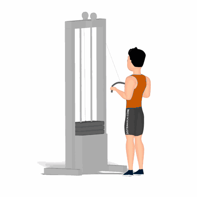

Tríceps Pulley

Tríceps Pulley, exercício para fortalecimento e hipertrofia dos músculos tríceps, com enfoque o tríceps braquial.
Ficha Técnica
Tipo: Musculação
Grupo Muscular: Tríceps
Aparelho: Nenhum
Músculos: Nenhum
Como realizar
- Conecte uma barra reta no cabo do aparelho;
- Pegue a barra com as palmas das mãos voltadas para baixo similar a largura dos ombros;
- Cotovelos flexionados e fixos ao lado do corpo;
- Manter a coluna reta e tronco levemente inclinado para frente, essa é a posição inicial do exercício;
- Entenda os cotovelos até a posição em que os braços fiquem totalmente estendidos;
- Concentre o esforço no músculo do tríceps;
- Retorne à posição inicial de forma controlada e repita os movimentos.
 RC STORE
RC STORE